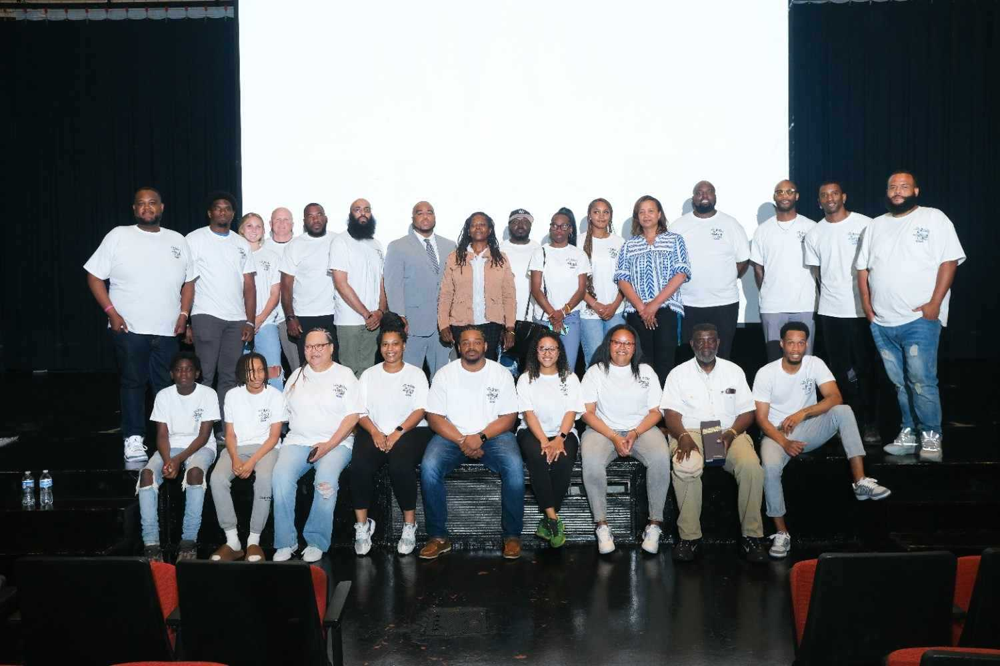
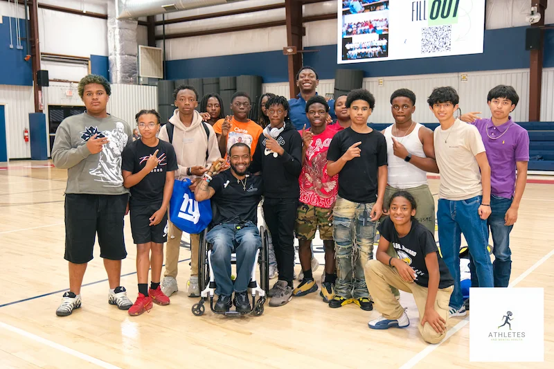
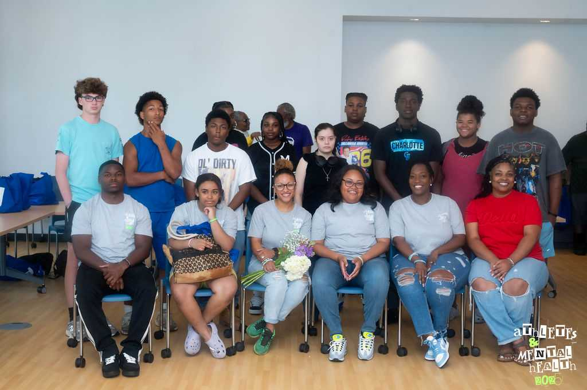
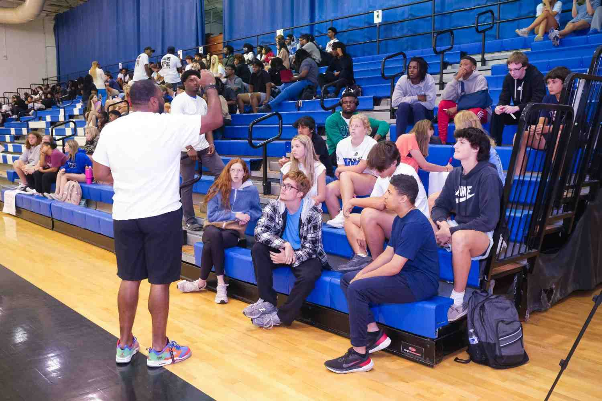

Every person has a story worth understanding. This is a little of mine.
I believe every person deserves to be seen, heard, and valued, not because of what they achieve, but because of who they are. My faith has always been the foundation of that belief. I believe every person is created with purpose, inherent worth, and the capacity to grow, even in life's most difficult seasons. That conviction shapes how I serve, how I lead, and how I care for every person I have the privilege of walking alongside.
I have learned that our calling is often found where our deepest gratitude meets the needs of others. For me, that calling has always been people.

A Career Built on People
As a Pre-Licensed Clinical Mental Health Counselor, educator, speaker, consultant, and Certified Athletic Trainer, Dr. Lovie has served people in counseling offices, athletic training rooms, classrooms, locker rooms, boardrooms, and conference stages, working with student athletes, professional athletes, coaches, parents, educators, and healthcare professionals.
A Journey Shaped by Purpose
Although the settings have changed throughout my career, the mission has never changed. I want people to leave feeling more equipped than when they arrived.
While each person's story is unique, I have found that many of us are searching for the same things, to be understood, to find hope, to believe we are capable of moving forward.
I do not believe people are defined by their hardest moments. I believe healing is possible, resilience can be developed, and that even when we cannot see it in the moment, God often uses our hardest seasons to reveal strengths we did not know we possessed. Those experiences deepen our understanding of ourselves and cultivate the empathy that allows us to genuinely care for and serve others.
My own professional journey has included seasons of incredible joy and seasons of unexpected change. Those experiences have reminded me that titles change, careers evolve, and circumstances shift, but our identity must be rooted in something deeper than what we do. That perspective shapes how I sit with clients, how I teach, how I speak, and how I encourage others to build a foundation that cannot be taken away.
The Education Behind the Mission
Dr. Lovie earned her Doctor of Education in Sport and Performance Psychology to better understand how people think, grow, and thrive under pressure. Along the way, she continued building on her foundation as a Certified Athletic Trainer while pursuing her calling in mental health counseling, because mental health is not separate from performance, leadership, relationships, or healing. It influences every part of our lives.

The Birth of AAMH
That understanding inspired me to create Athletes and Mental Health. AAMH was born from a desire to give back to my hometown of Wilson, North Carolina, even while living hundreds of miles away. As I reflected on everything my education, career, mentors, and experiences had given me, I realized one of the greatest gifts we can offer our communities is not always financial. Sometimes it is the knowledge we have gained, the wisdom we have earned, and the willingness to return and share it.
I realized I did not have to wait until I had limitless resources to make a meaningful impact. I could begin with what God had already placed in my hands.
What started as one conversation with student athletes in the community that helped shape me has grown into opportunities to partner with schools, athletic departments, organizations, businesses, healthcare professionals, and communities across the country. The reach has grown, but the mission has remained the same, to make conversations about mental health more approachable, practical, compassionate, and accessible.


How I Serve
Whether I am providing counseling, facilitating a workshop, consulting with an organization, teaching future professionals, or standing on a stage delivering a keynote, my goal is never simply to share information. It is to create space for transformation.
I do not believe my role is to fix people. I believe my role is to walk alongside them as they discover the strength, wisdom, and resilience that have been within them all along.
I want people to walk away with practical tools they can apply immediately. I want organizations to create cultures where people feel supported. I want coaches to understand the power of empathy. I want parents to feel equipped to have meaningful conversations with their children. I want leaders to recognize that caring for people is not separate from excellence, it is how excellence is sustained.
My work is grounded in evidence-based practices, including cognitive behavioral therapy and person-centered care, while my faith reminds me why every person deserves compassion, dignity, and hope. I honor each person's beliefs and values, creating a space where they feel respected, safe, and empowered to pursue meaningful growth.
More than anything, I hope the people whose paths cross mine leave feeling seen.
"Let your light shine before others, that they may see your good deeds and glorify your Father in heaven."Matthew 5:16
That verse is a daily reminder that my work is not about recognition. It is about stewardship, using the gifts God has entrusted to me to serve others with excellence, humility, and compassion.
Thank you for taking the time to learn a little about my story.
I look forward to learning yours.